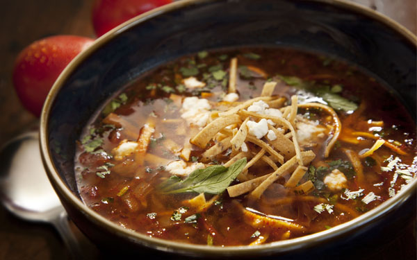

About SOL Cocina
Designed to echo the expansive sea, sky, and desert elements of the Baja peninsula, SOL brings together old world charm and urban comfort. We cook in an open kitchen with counter seating for guests who like to see the bustling kitchen that is much like a Baja taco bar. SOL offers a menu full of fresh, seasonal ingredients and authentic Mexican flavors, along with a vibrant bar that honors the flavors of the Baja region with over 60 artisan tequilas and an inviting fire element. We love the timeless beauty of Southern California and Baja and we’re committed to keeping it that way. Whenever possible, we have chosen products and programs that we believe to be both environmentally and socially pro-active. Whenever possible, we choose and serve seafood that is certified by MSC and Seafood Watch; source our meat from small packers using environmentally safe and humane methods; and we resolve to be as environmentally-friendly a restaurant as possible with low-water use fixtures, no bleach, using plastic lids instead of plastic wrap. And we make sure that everything that can be recycled, is recycled.
SOL and Baja California: Beauty and Inspiration
Baja California is a place unique in all the world: rugged, serene and spectacularly beautiful. Isolated for centuries, Baja has developed its own unique character and spirit between ocean and desert. It has always lured the adventurous among us, as well as those who seek a break from the daily hustle and escape to a place where troubles melt away with the tides. Authentic Baja California cuisine evolved from the cooking of its early settlers – the fishing families and ranchers who came to this rugged region from mainland Mexico. The people who settled here had to look to the sea; there were no rich fields of corn and vegetables and no fat herds of cattle or hogs. Fuel was scarce and expensive, and communities were small and isolated. Simple, quick and fresh became the bywords of Baja-style cooking. SOL was inspired by our many trips down the beautiful coast of Baja Mexico to surf, or camp under the stars. Stopping to experience the authentic flavor of local foods prepared by street vendors is a highlight of every trip. Whether it’s local lobster simply cooked over an outdoor grill, or made to order tacos from a puesto furnished with a dazzling array of salsas, there’s nothing like the fresh, simplicity of Baja cuisine. Add an ice cold cerveza and lime wedge and we’re talking pure bliss.